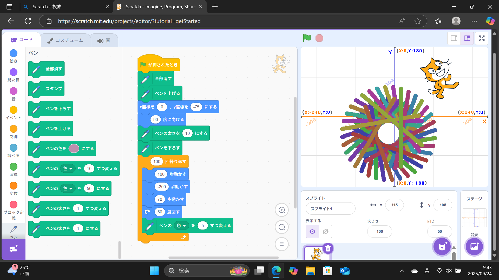
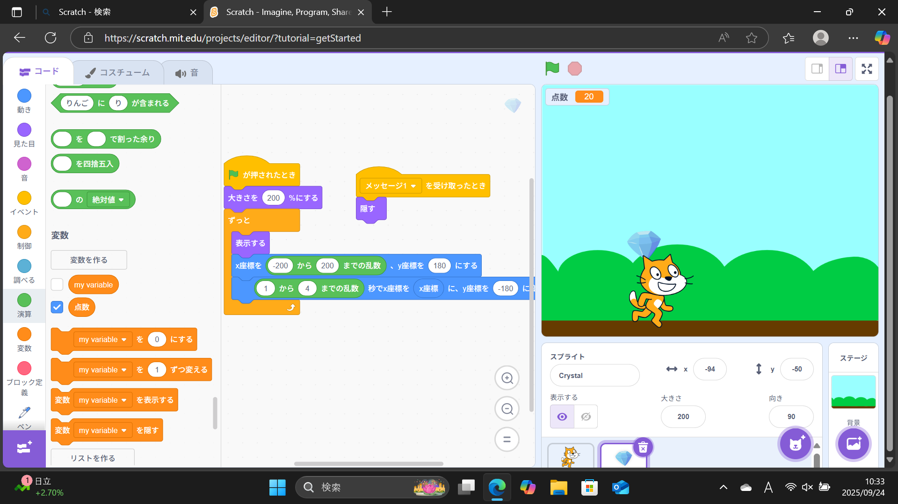

1週目のレポート ： 公大高専１年実習I-1
4b班41番 Yamarin1016
第1週目
1-1 サイエンスアート

1.内容
Scratchの操作方法や、プログラミングのやり方を学ぶ。ゲームを作る際には、一つのキャラクターやものを プログラムするだけではなくゲームに関連するそのものそのものにプログラムする必要があると知った。
2.感想
今回の授業を通して、プログラミングは一つ一つの動作が大切なんだと分かった。途中のプログラムがあいまい だと、変な動きをしたり動かなかったりするから、これからプログラミングをする際には確認することを心掛けたい。
1-2 ゲーム

1.内容
上からランダムな位置から落ちてくる落下物を、矢印キーを使ってキャラクターを動かしてキャッチ するゲームを作った。プログラミングはキャラクターは行動、落下物はキャラクターに触れたら消える ことや位置やスピードをランダムに設定した。
2.感想
自分でゲームを作ってみて、今までに自分がやってきたゲームや世の中のゲームがどのように作られているか を知ることができて良かった。スクラッチを通してなら簡単なゲームから作れるから自分で考えながら作りたい です。
1-3 ホームページ作成
私のホームページ
1.内容
自分のホームページを作った。元々あったホームページのページの名前を変えたり、趣味や好きなもののところを 自分好みに変えた。
2.感想
ホームページを作るのは、元々書いてある文を書き換えるだけだから簡単だった。世界中の人が見ることができる ホームページだから達成感があった。
各ページへのリンク
1週目のレポート
2週目のレポート
3週目のレポート
私のホームページ